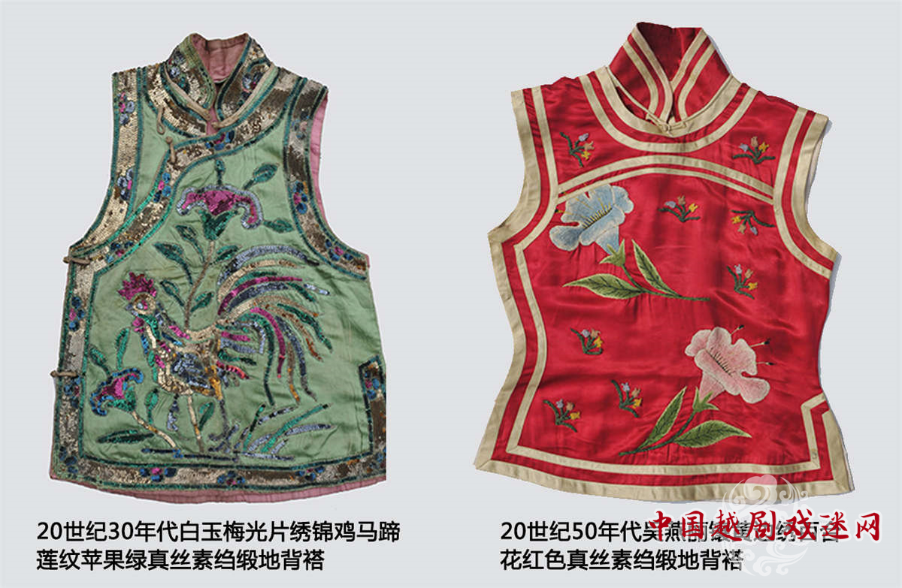

背褡
2019-05-16 19:55:45

背褡，又叫坎肩、马甲。为角色穿在外面的无袖上衣。
种类特征
分花背褡、素背褡、卒子背褡、和尚背褡和水纹田背褡等五种。
花背褡，为剧中小旦、花旦之类角色所穿，缎地绣花纹，颜色有多种。
素背褡，为剧中员外之类角色所穿，锈团福、团寿、团花等纹，比花背褡稍长。
卒子背褡，为剧中兵卒、报子之类角色所穿，形如对襟小马褂，红色、中间有一白色圆块，上书“卒”字或“勇”字。其反面多以黄布绘虎皮纹，称虎皮背褡，一般为剧中小鬼、夜叉等角色所穿。
和尚背褡，为剧中武和尚、伽蓝神之类角色所穿。颜色为黄色者，腰间镶绿绸，颜色为绿色者，腰间镶黄绸。
水纹田背褡，为剧中道姑之类角色角色所穿。